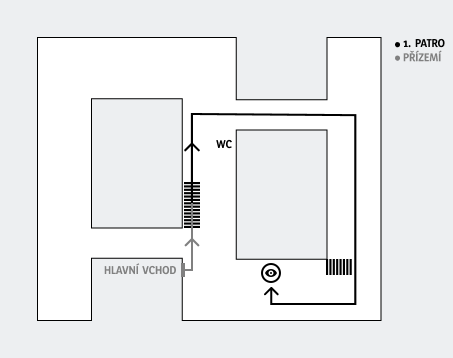

Objednání
Objednávejte se telefonicky na +420 722 959 360
Po - Čt 9:00 - 14:00. Choďte prosím včas.
Neobjednané pacienty nepřijímáme.
Poukazy
Pro částečné krytí pojišťovnou je při návštěvě potřeba doložit poukaz od očního lékaře na brýle a optické pomůcky s kódem 4000141. Platnost poukazu je 1 měsíc.
Doklad už neprochází schvalovacím řízením pojišťovny.
Platba
Platba je možná platební kartou nebo v hotovosti.
Spolupracujeme se všemi pojišťovnami.
Kde jsme
Poliklinika Lesná
Halasovo náměstí 1 – 1. patro, dveře č. 249
638 00 Brno
Při vstupu hlavním vchodem se vydejte doleva ke schodišti a vyjděte do 1. patra. Po té projděte kolem WC doprava proskleným koridorem, za ním odbočte doprava a na konci chodby ještě jednou doprava. Ordinace je po pravé straně. Sledujte značení na zdech.
Bezbariérový vstup je možný.
Pohodlné parkování přímo před poliklinikou nebo v přilehlém okolí.
Doprava MHD
- Z hlavního nádraží a od Hotelu Grand (autobus. stanice) – tram 9 a 7 (směr
Čertova rokle), zast. Halasovo nám.
nebo vlakem směr Tišnov či Žďár nad Sázavou, 2. zast. Brno – Lesná - Z ÚAN Zvonařka – bus 44, zast. Poliklinika Lesná

Kontakt
Oční protézy – Jitka Klíčníková
Poliklinika Lesná
Halasovo náměstí 1
638 00 Brno
IČ: 49930770